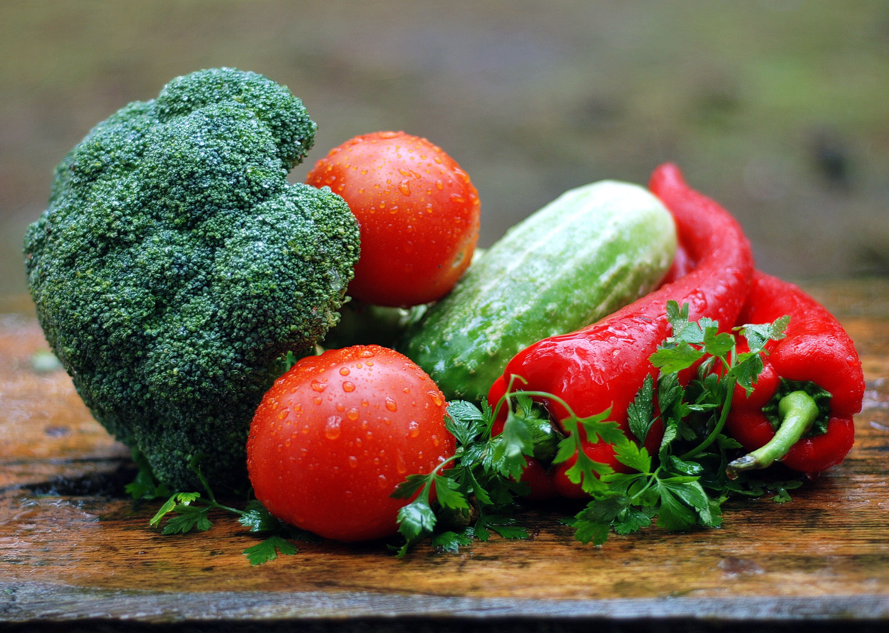
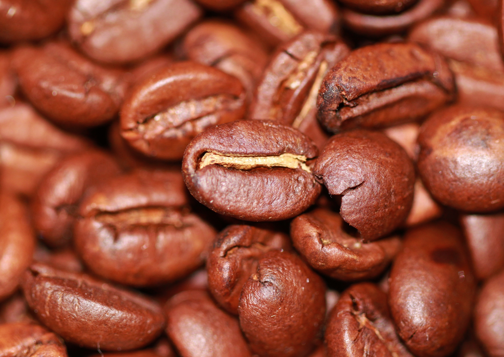

Vegetables

Barbecue

Coffee

It's Delicious
Food is any substance consumed to provide nutritional support for an organism. Food is usually of plant, animal or fungal origin, and contains essential nutrients, such as carbohydrates, fats, proteins, vitamins, or minerals. The substance is ingested by an organism and assimilated by the organism's cells to provide energy, maintain life, or stimulate growth. Different species of animals have different feeding behaviours that satisfy the needs of their unique metabolisms, often evolved to fill a specific ecological niche within specific geographical contexts.Omnivorous humans are highly adaptable and have adapted to obtain food in many different ecosystems. Historically, humans secured food through two main methods: hunting and gathering and agriculture. As agricultural technologies increased, humans settled into agriculture lifestyles with diets shaped by the agriculture opportunities in their geography. Geographic and cultural differences has led to creation of numerous cuisines and culinary arts, including a wide array of ingredients, herbs, spices, techniques, and dishes. As cultures have mixed through forces like international trade and globalization, ingredients have become more widely available beyond their geographic and cultural origins, creating a cosmopolitan exchange of different food traditions and practices. Today, the majority of the food energy required by the ever-increasing population of the world is supplied by the industrial food industry, which produces food with intensive agriculture and distributes it through complex food processing and food distribution systems. This system of conventional agriculture relies heavily on fossil fuels, which means that the food and agricultural system is one of the major contributors to climate change, accountable for as much as 37% of total greenhouse gas emissions. Addressing the carbon intensity of the food system and food waste are important mitigation measures in the global response to climate change. The food system has significant impacts on a wide range of other social and political issues including: sustainability, biological diversity, economics, population growth, water supply, and access to food. The right to food is a human right derived from the International Covenant on Economic, Social and Cultural Rights, recognizing the "right to an adequate standard of living, including adequate food", as well as the "fundamental right to be free from hunger". Because of these fundamental rights, food security is often a priority international policy activity; for example Sustainable Development Goal 2 "Zero hunger" is meant to eliminate hunger by 2030. Food safety and food security are monitored by international agencies like the International Association for Food Protection, World Resources Institute, World Food Programme, Food and Agriculture Organization, and International Food Information Council, and are often subject to national regulation by institutions, like the Food and Drug Administration in the United States.